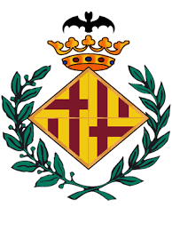
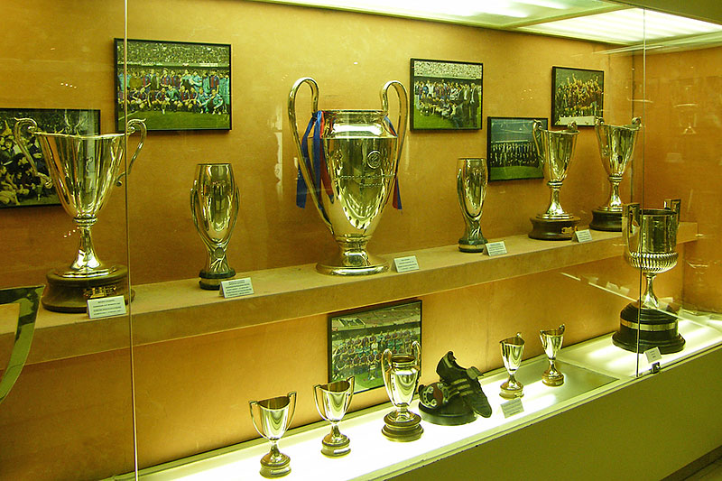
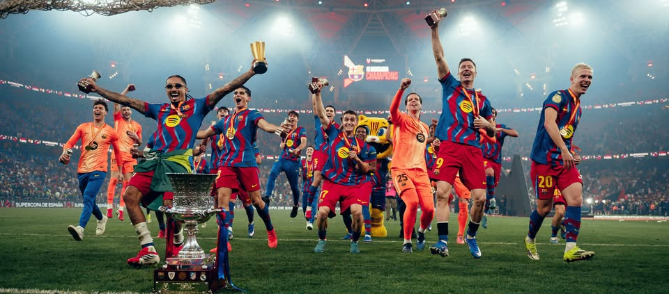

FC Barcelona
Es una entidad multideportiva, también conocida como el "Barça" y que se ubica en Barcelona.

Historia
Todo comenzó a finales 1898 con la llegada de Joan Gamper debido a motivos profesionales y su deseo de crear un equipo de fútbol. Logró conseguir personas interesadas en el proyecto y fue hasta 1908 que logró fundar el club en Catalunya.
Finalmente, a finales de 1910 el club pudo conseguir sus primeros títulos oficiales. Adicional a eso, se decidió utilizar el escudo de la ciudad como símbolo del equipo y los colores azul y grana como los colores oficiales del club.
Sin embargo, no fue durante el siglo XX el club pasó por distintas dificultades, incluyendo la Guerra Civil Española y el apoderamiento del régimen franquista, que incluso designaba al presidente del club.
Logros
A día de hoy, el FC Barcelona ha logrado desempeñarse con éxitos en múltiples deportes a nivel nacional e internacional. En fútbol, de acuerdo a la página oficial del club, el equipo ha logrado conseguir 28 títulos de La Liga Española, 32 Copas del Rey, 5 Copas de Europa y 3 Mundiales de Clubes, entre otros.
Jugadores destacados
Lionel Messi
El mejor jugador de la historia e ídolo histórico del club.
Johan Cruyff
Ídolo del club y uno de los encargados de incalcular el estilo de juego del equipo.
Xavi Hernández
Mediocampista del equipo que logró conseguir todos los trofeos posibles.
Lamine Yamal
Una de las estrellas del equipo en la actualidad.

Actualidad
A día de hoy, el FC Barcelona sigue siendo uno de los más grandes equipos del mundo. Actualmente, se encuentra en la lucha por liga, copa y champions, además de tener un equipo lleno de jóvenes que pueden liderar el deporte en un futuro. Asismiso, el club tendrá elecciones presidenciales en marzo de 2026 donde los socios del equipo podrán escoger quien será el próximo presidente del club.
